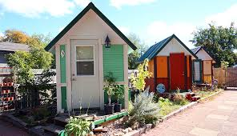

News
This is a new way to revelutionize houses.

One group in south bend bulit these micro houses. This group is trying to help make a better life for homeless people by building smaller houses for them. Although that these houses have no heat or air conditioning, it is way better than staying on the streets during a freezing winter. Please spread the word about these micro houses and help the homeless by donating to shelters. Lots of these peopele have something to say about this homeless problem. Learn about Mike Keen from Thrive Michiana's problems about this tragedy: "I don't want to live in an apartment, but I want that size and I want that independence” There are a lot more people that have something to say about this problem. So please go and help these people live a better live.